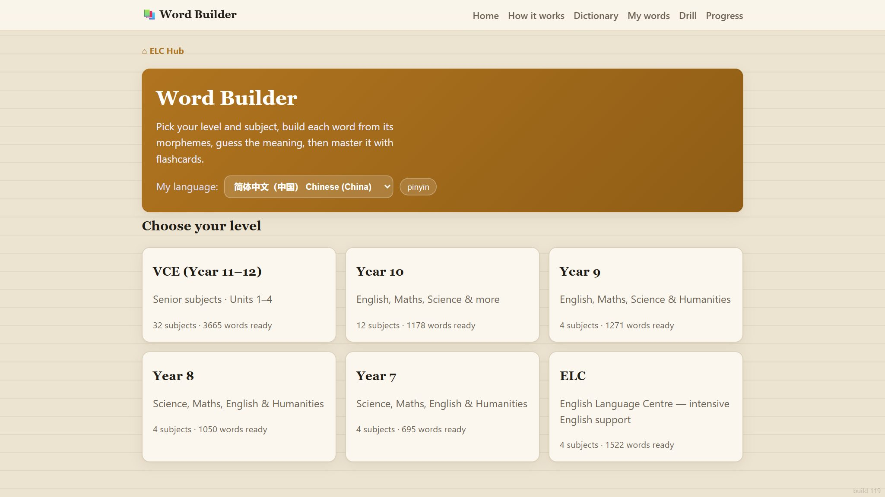
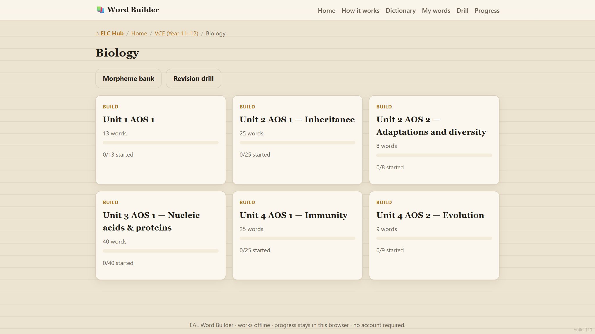
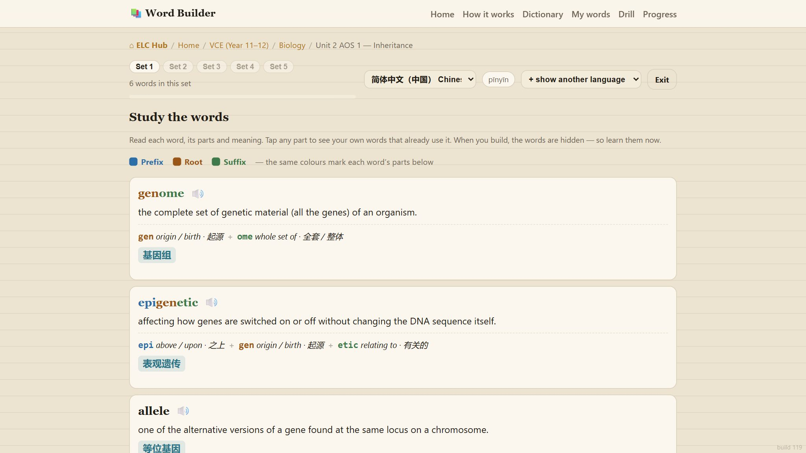
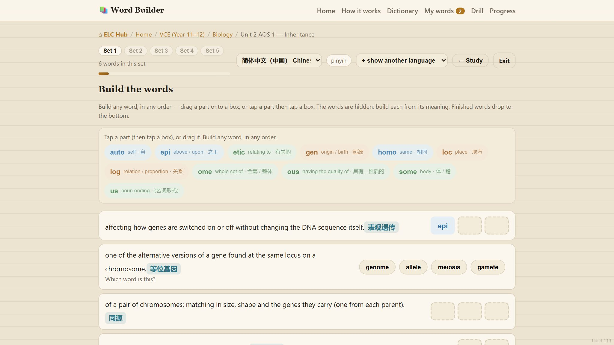
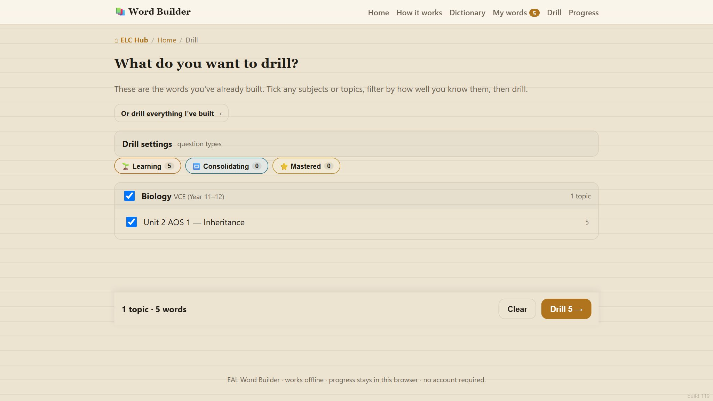
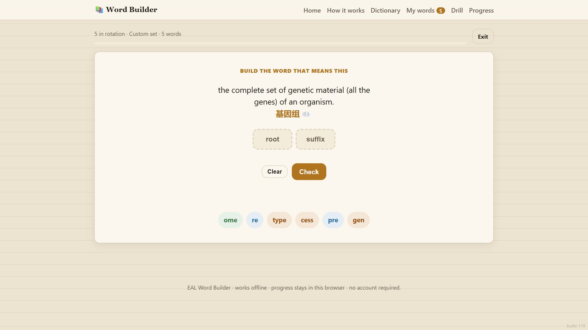
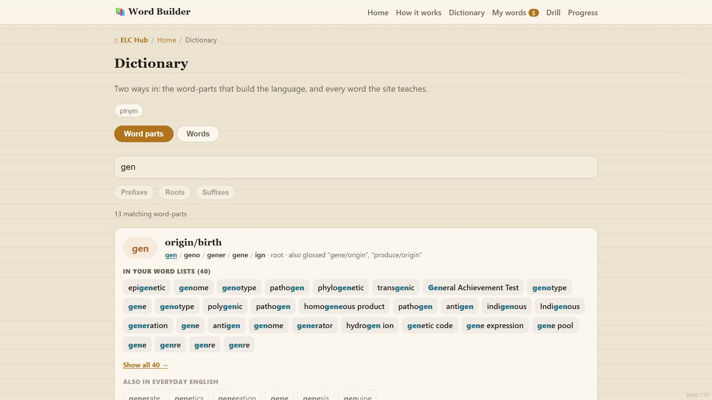
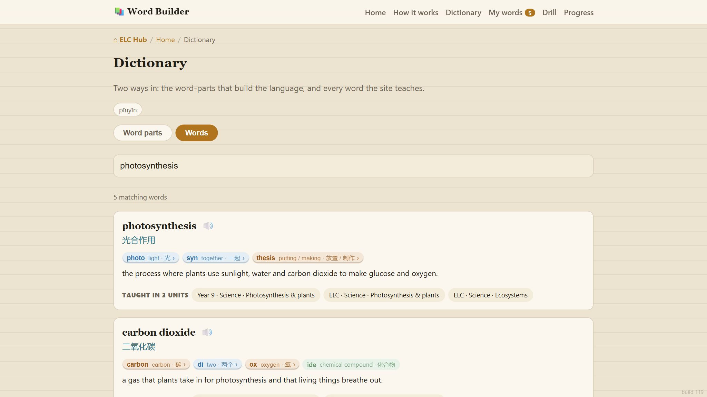

Subject vocabulary sorted by unit and Area of Study. Students build each word from its parts, drill it, and look up any prefix, root or suffix. No login.
Open Word Builder liaminhawai-cmd.github.io/EAL-Vocabulary-Site






